[Resumo de uma linha: plataformas ativas + objetivo do manual — ex: "Meta Ads + Google Ads — da primeira campanha à escala com CPA controlado."]
Este manual existe para que qualquer pessoa — mesmo sem experiência prévia em mídia paga — consiga criar, lançar e otimizar as campanhas de [NOME DO CLIENTE] sem depender de conhecimento tácito.
Deve ser consultado sempre que alguém for:
Nova campanha em Meta Ads ou Google Ads
Ou segmentação de público
Ou selecionar criativos para veicular
Decidir se pausa, escala ou ajusta uma campanha
Pixel, CAPI, eventos de conversão
Por que a conta está estruturada assim
📊 Abrir planilha modelo (cópia)
Link "fazer uma cópia" — exige login Google. Confirme o conteúdo antes de usar.
| Item | Dado |
|---|---|
| Empresa | [Nome] |
| Segmento | [Mercado e tipo de negócio] |
| Localização / abrangência | [Cidade, região, raio] |
| Ticket médio | [R$ X] |
| Margem sobre o ticket | [% ou R$] |
| Orçamento mensal de mídia | [R$ X/mês] |
| Meta de faturamento via tráfego pago | [R$ X/mês] |
| CPA-alvo (calculado) | [R$ X] |
| Ciclo de venda | [Curto / Médio / Longo] |
| Tipo de decisão | [B2C impulso / B2C considerado / B2B comitê] |
Nenhuma campanha deve ser lançada sem os itens desta tabela resolvidos.
| Item | Status | Responsável |
|---|---|---|
| Business Manager / conta de anúncio Meta | ⚠ Pendente | [Quem resolve] |
| Conta Google Ads vinculada ao GA4 | ⚠ Pendente | [Quem resolve] |
| Pixel Meta instalado | ⚠ Pendente | [Quem resolve] |
| Conversions API (CAPI) | ⚠ Pendente | [Quem resolve] |
| Tag Google Ads / GTM | ⚠ Pendente | [Quem resolve] |
| Evento de conversão testado | ⚠ Pendente | [Quem resolve] |
| Domínio verificado (Meta Business) | ⚠ Pendente | [Quem resolve] |
| Landing page publicada | ⚠ Pendente | [Quem resolve] |
| Catálogo de produtos (Shopping) | N/A | — |
/tracking-web-and-capi para setup de pixel/CAPI/GTM.Tutorial de terceiro (curso) — pode conter tela de conta/negócio não relacionado a este projeto.
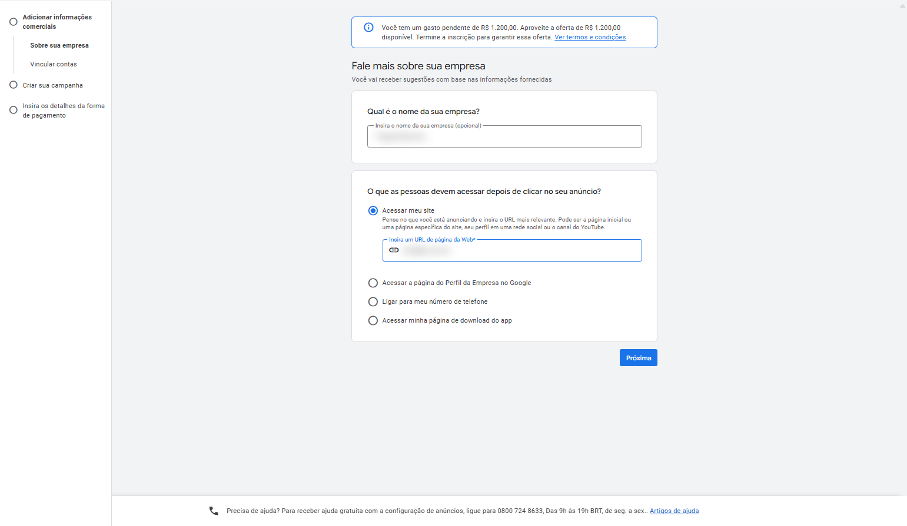
ads.google.com direto)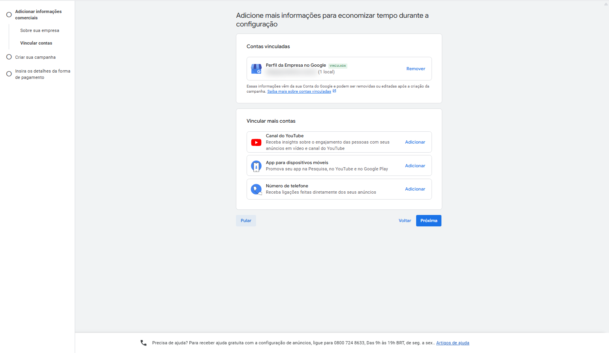
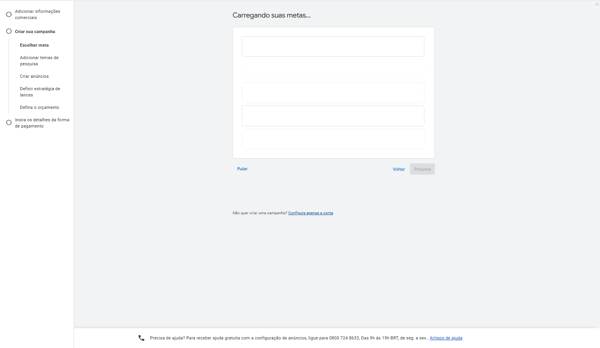
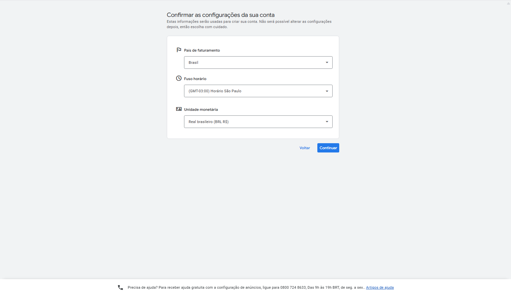
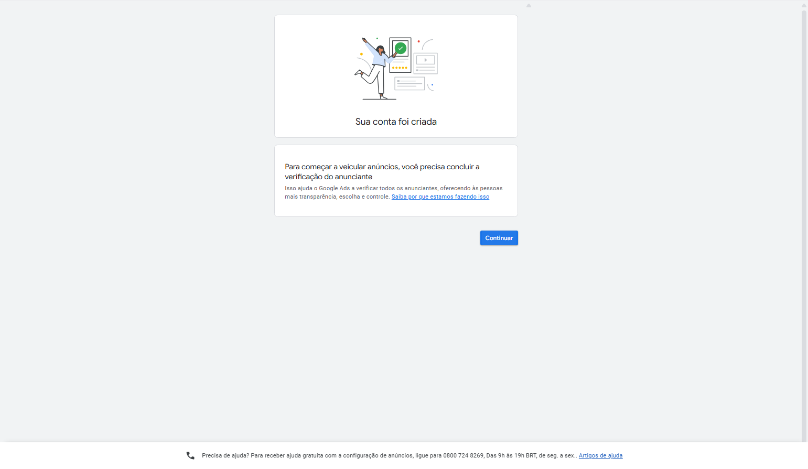
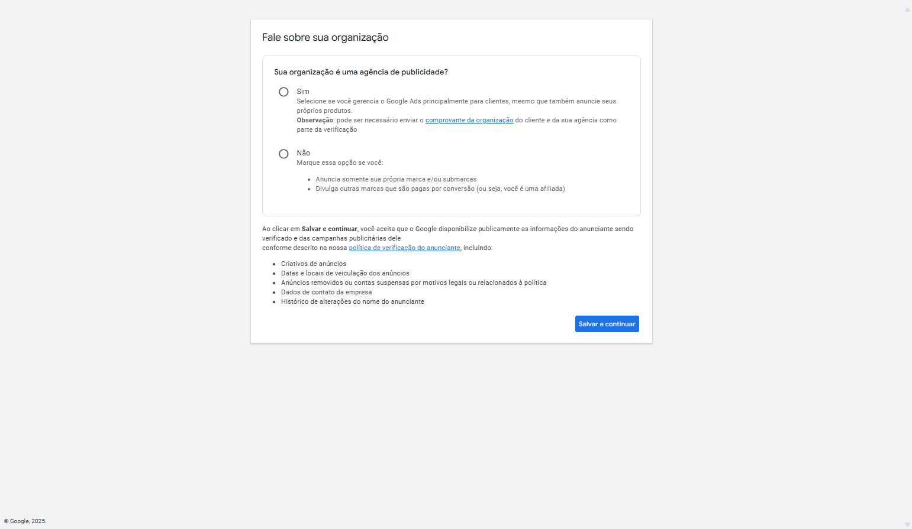
Tutorial de terceiro (curso) — pode conter tela de conta/negócio não relacionado a este projeto.
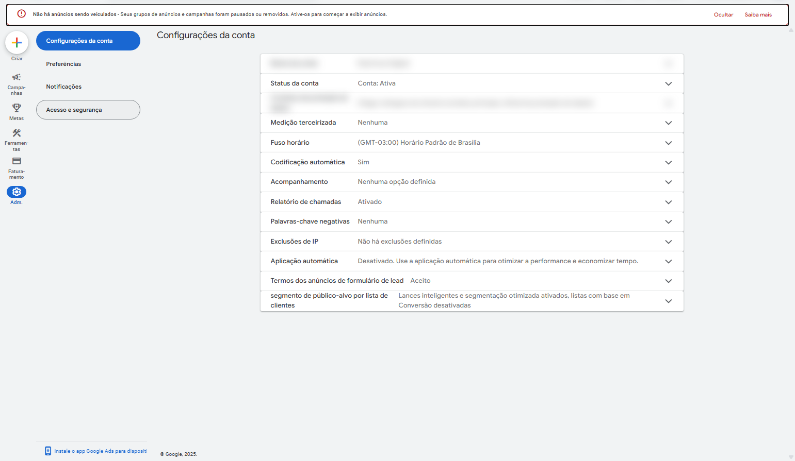
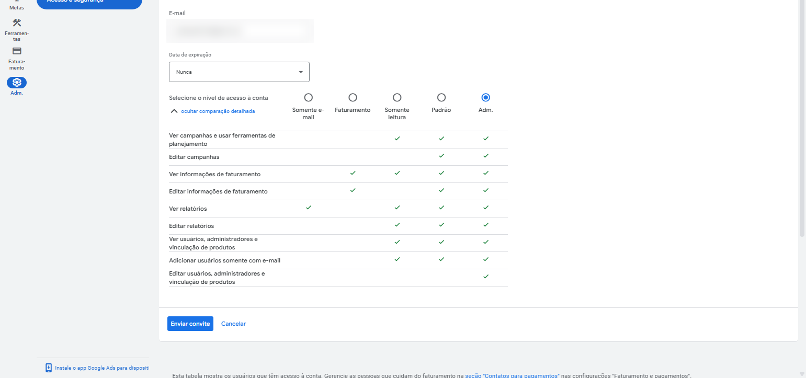
| Nível | O que libera | Quando usar |
|---|---|---|
| Somente e-mail | Só recebe relatórios por e-mail, não entra na conta | Sócio/cliente que só quer ser avisado |
| Faturamento | Ver e editar informações de pagamento | Financeiro/contabilidade |
| Somente leitura | Ver campanhas e relatórios, sem editar | Cliente acompanhando sem mexer |
| Padrão | Editar campanhas e relatórios, sem mexer em usuários | Quem opera a conta no dia a dia (ex: agência) |
| Adm. | Acesso total, incluindo adicionar/remover pessoas | Dono da conta |
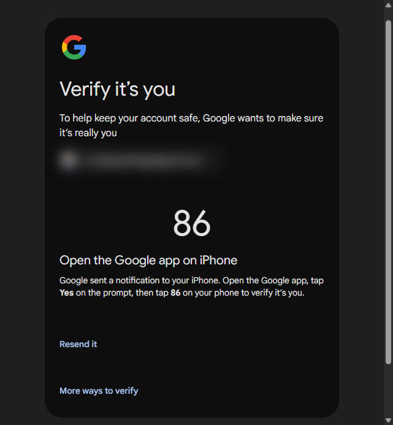
<img src="assets/screenshots/google-estrutura-conta.png"> assim que houver acesso à conta.
— fim do bloco Google Ads —
| Evento | Onde dispara | Recebe em | Como validar |
|---|---|---|---|
| PageView | Toda página | Meta Pixel + GA4 | Meta Pixel Helper |
| Lead/Contato | Envio de formulário | Meta CAPI + Google Ads | Eventos de teste |
| Contato via WhatsApp | Clique no botão | Meta Pixel + GTM | Eventos de teste |
| Compra (se e-commerce) | Página de obrigado | Meta CAPI + Google Ads + GA4 | Valor/moeda batendo com o pedido |
utm_source=[meta/google]&utm_medium=cpc&utm_campaign=[nome-campanha]&utm_content=[nome-anuncio]
Janela de atribuição: [1 dia clique / 7 dias clique / 1 dia visualização]
A tag do Google Ads é o "pixel" do Google — todo mundo já chamou isso de nome diferente (pixel, conjunto de dados, API de conversões) e vai continuar mudando de nome no futuro. O que importa é a lógica, que tem duas peças:
| Tag do Google Ads | Ação de conversão | |
|---|---|---|
| Quantas por conta | Uma só | Uma por evento que você quer medir |
| Onde instalar | Em todas as páginas do site | Só na página do evento (ex: página de "obrigado"/confirmação) |
| Equivale a | O pixel/base do Meta | Um evento do Meta (Lead, Comprar, etc.) |
3 formas de instalar (depois de criar a ação de conversão no Google Ads): via Google Tag Manager (recomendado — gerencia tags/eventos sem mexer em código), manual (copiar o snippet e colar no <head> ou <body> da página) ou enviar o snippet por e-mail para quem cuida do site.
No código, a tag aparece como AW-XXXXXXXXXX e a ação de conversão como AW-XXXXXXXXXX/YYYYYYYYYYY — não precisa decorar, só saber identificar os dois IDs ao configurar.
| Fase | Objetivo | Critério de avanço |
|---|---|---|
| Teste | Validar públicos, criativos e mensagens | [Nº mínimo de conversões para decidir] |
| Otimização | Concentrar verba no que performou | [CPA dentro da meta por X dias seguidos] |
| Escala | Crescer volume mantendo CPA-alvo | [CPA estável a cada incremento de 15–20%] |
Baseado no ICP e nas personas do Manual de Copy — [link/seção do Manual de Copy].
| Tipo | Definição | Objetivo no funil |
|---|---|---|
| Frio (interesse) | [Interesses/demografia do ICP] | Topo — geração de demanda |
| Frio (lookalike) | [Lookalike 1–3% da base de clientes] | Topo — escala |
| Morno | [Engajou com perfil/vídeo nos últimos X dias] | Meio — aquecimento |
| Quente (remarketing) | [Visitou site/LP sem converter] | Fundo — conversão |
O Google tem 4 formas principais de segmentar — não precisa dominar todas de cara, mas precisa saber que existem:
| Tipo | Foco | Controle | Quando usar |
|---|---|---|---|
| Público-alvo | A pessoa | Alto | Quando você já conhece bem o seu ICP |
| Conteúdo | Onde o anúncio aparece | Médio | Quando você conhece os canais/sites certos |
| Segmentação otimizada | O Google escolhe por você | Baixo | Testes — evite como padrão |
| Indicadores de público-alvo | Você sugere, o Google decide | Baixo | Campanhas Performance Max |
Tutorial de terceiro (curso) — pode conter tela de conta/negócio não relacionado a este projeto.
Dentro de "Público-alvo" existem 4 subtipos que podem ser combinados no mesmo público:
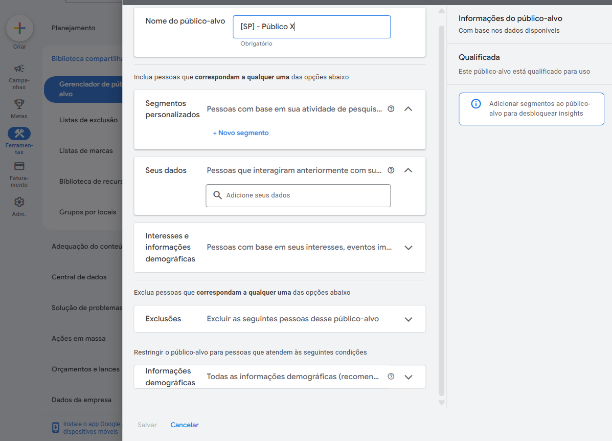
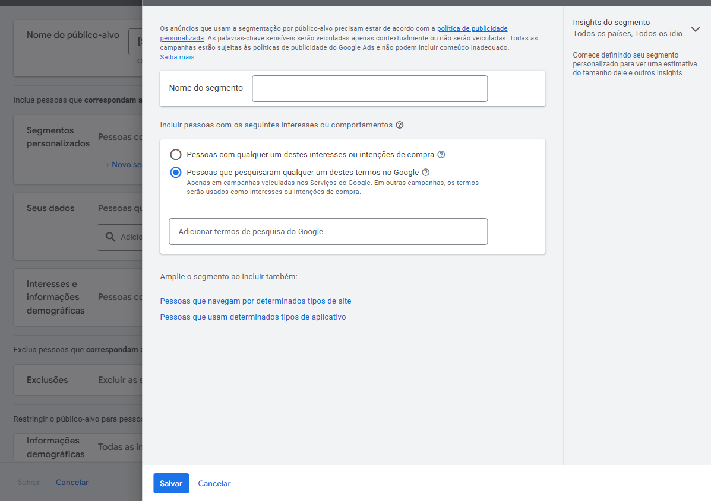
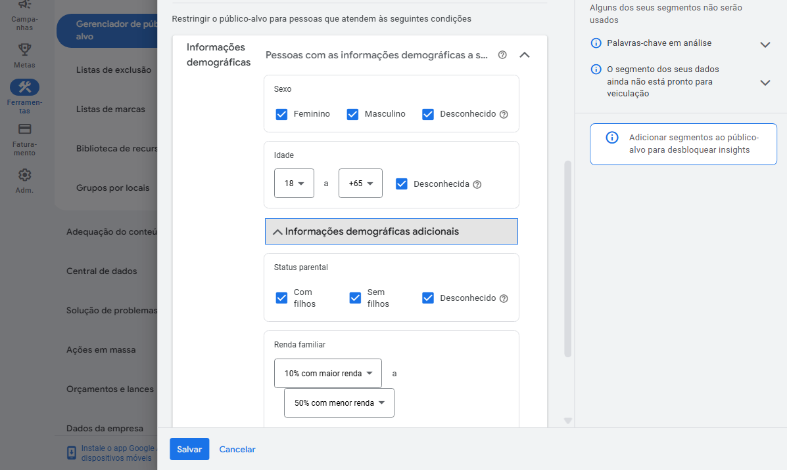
Tutorial de terceiro (curso) — pode conter tela de conta/negócio não relacionado a este projeto.
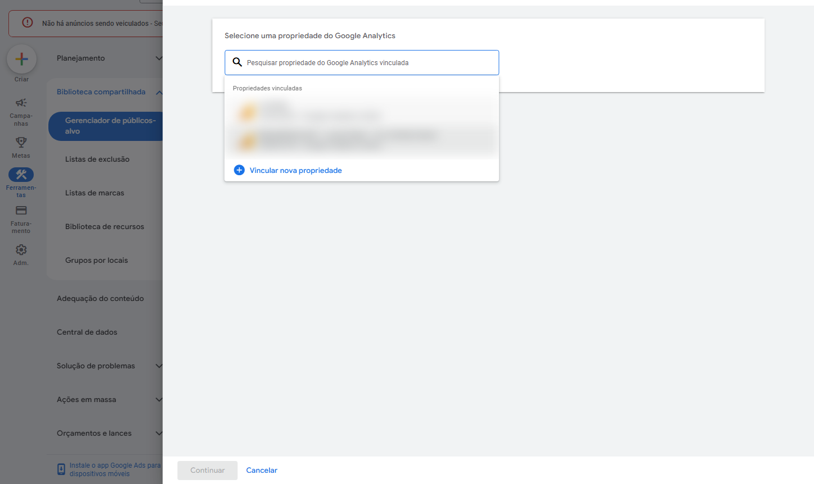
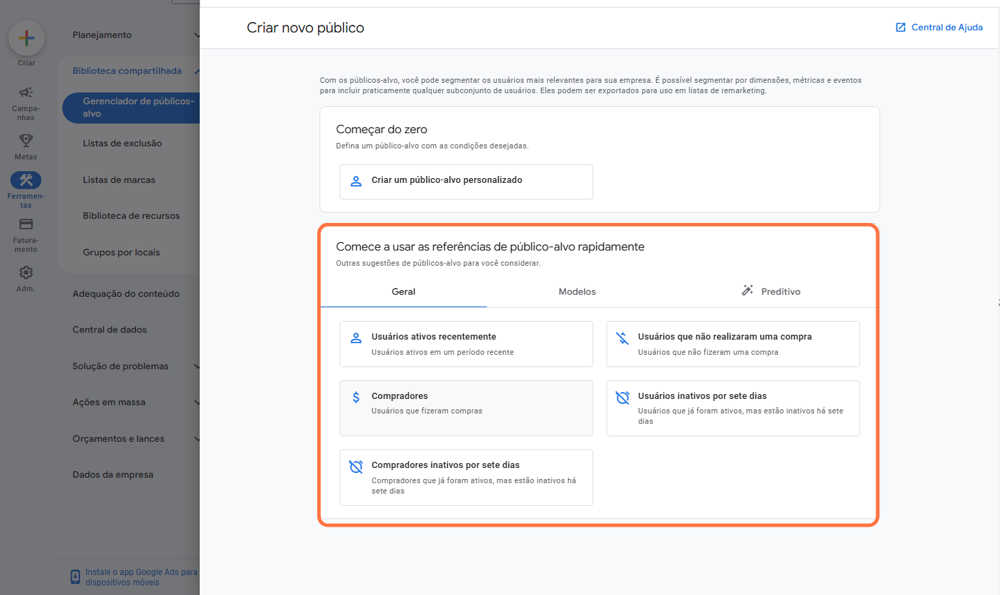
purchase, in_app_purchase ou ecommerce_purchase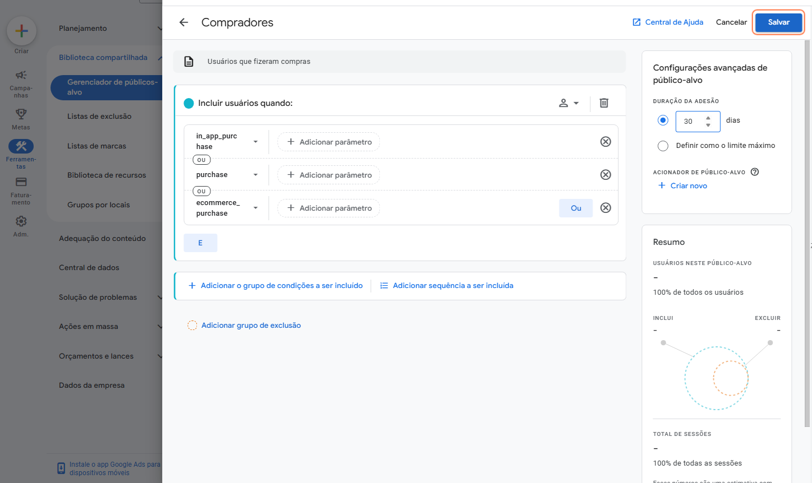
No Google Ads não existe "público" da mesma forma que no Meta — a segmentação primária é por intenção de busca, expressa em palavras-chave. Agrupe por camada de intenção, uma dor/tema por grupo de anúncios (mesma regra da seção 4):
| Camada | Palavras-chave | Tipo de correspondência | Intenção |
|---|---|---|---|
| [Dor 1] | [termo 1], [termo 2] | [Frase / Exata] | Alta — pronto para comprar |
| [Dor 2] | [termo 1], [termo 2] | [Frase / Exata] | Média — pesquisando solução |
Tipos de correspondência: ampla (mais volume, menos controle — usar com cautela e lances automáticos), frase (equilíbrio, a expressão precisa aparecer na busca) e exata (mais controle, menor volume, maior intenção). Comece por frase/exata e só teste ampla depois de ter dados de conversão.
[concurso], [grátis], [curso], [como fazer eu mesmo], [emprego/vaga]
Aplicar em todas as campanhas de Pesquisa — evita gastar verba com buscas sem intenção de compra. Revisar semanalmente o relatório de "Termos de pesquisa" para achar novas negativas.
— fim do bloco Google Ads —
| Plataforma / Campanha | % do orçamento | Justificativa |
|---|---|---|
| Google Ads — Rede de Pesquisa | [X%] | Captura de demanda ativa |
| Meta Ads — Prospecção | [X%] | Geração de demanda |
| Meta Ads — Remarketing | [X%] | Menor volume, maior conversão |
| LinkedIn Ads (se B2B) | [X%] | Prospecção por cargo/setor |
No Google Ads a arquitetura muda: em vez de "objetivo → conjunto de anúncios → anúncio" (Meta), a lógica é rede/tipo de campanha → grupo de anúncios (1 por dor/tema) → anúncio + palavras-chave (ver diagrama da seção 4).
| Rede | O que é | Melhor para |
|---|---|---|
| Pesquisa (Search) | O Google clássico — aparece no topo quando alguém pesquisa por uma palavra-chave | Captura de demanda ativa; todo anunciante deve estar aqui pelo menos com o nome da própria marca |
| Display (GDN) | Banners em sites parceiros do Google | Remarketing — aparecer para quem já interagiu antes |
| YouTube | Anúncio antes do vídeo, nos resultados de busca do YouTube ou como recomendação | Reconhecimento, consideração e conversão por vídeo |
| Shopping | Produto com foto, preço e nome da loja direto na busca | E-commerce — exige Google Merchant Center |
| Maps | Campanhas locais | Atrair visita física ao estabelecimento |
| Gmail / Discover | Anúncio direto na caixa de entrada ou no feed de notícias do Google | Alcance complementar, menor prioridade inicial |
Ponto de atenção: por ter pouca transparência de onde o anúncio aparece, reserve a maior parte da verba para Pesquisa até ter histórico de conversão antes de escalar Performance Max.
Diferente do Meta (onde o lance segue o orçamento automaticamente), no Google Ads lance e orçamento são independentes: o orçamento é o motor, o lance é o pedal do acelerador. Motor potente com lance baixo = campanha não decola, mesmo com muito dinheiro disponível.
| Grupo | Estratégia | Como funciona |
|---|---|---|
| CPA — foco em conversão | Maximizar conversões Automática | Gasta todo o orçamento buscando o máximo de conversões, sem limite por ação |
| Maximizar valor da conversão Automática | Foco no valor total das vendas, não na quantidade | |
| CPA desejado (Target CPA) | Você define o custo-alvo por conversão; o Google tenta manter esse valor | |
| ROAS desejado (Target ROAS) | Você define o retorno mínimo esperado sobre o investimento | |
| Custo por clique otimizado (eCPC) | Ajusta o lance automaticamente pela probabilidade de conversão — meio-termo entre CPC e CPA | |
| CPC — foco em clique | CPC manual | Você escolhe quanto pagar por clique — mais controle, pode não gastar tudo |
| Maximizar cliques Automática | O Google busca o maior volume de cliques possível, sem controlar o custo por clique — ideal para objetivo Tráfego | |
| CPM — foco em visibilidade | CPM desejado | Você define quanto pagar para aparecer mil vezes, independente de clique |
| Parcela de impressões desejada | Foco em aparecer no topo da Rede de Pesquisa, mesmo sem clique | |
| vCPM (CPM visível) | 100% do foco em aparecer — zero foco em clique | |
| CPV — foco em vídeo | CPV desejado | Você define quanto pagar por visualização (YouTube) |
| CPV máximo | O Google gasta tudo buscando o máximo de visualizações, sem você definir o custo |
| Objetivo | Melhor estratégia inicial |
|---|---|
| Vendas diretas | CPA desejado ou ROAS desejado |
| Cadastros/Leads | CPA desejado |
| Tráfego | CPC manual ou Maximizar cliques |
| Visibilidade/Branding | CPM desejado ou Parcela de impressões |
| Vídeo (YouTube) | CPV desejado, se quiser controle |
Assim como no Meta, as estratégias automáticas (Maximizar conversões/valor/cliques) só funcionam bem depois de o histórico de conversão ter volume mínimo — em conta nova, comece automático e migre para CPA/ROAS desejado quando tiver dado suficiente. Lema: lance bom é lance testado.
Glossário rápido: CPA = custo por ação/conversão · CPC = custo por clique · CPM = custo por mil impressões · CPV = custo por visualização · ROAS = retorno sobre o investimento.
— fim do bloco Google Ads —
Padrão: 1 dor/oferta = 1 campanha = 1 landing page. Mínimo 3 campanhas por plataforma ativa. Preencha [Plataforma] com Meta Ads ou Google Ads conforme o tipo escolhido nos cardápios acima.
[Plataforma] · [Tipo/Objetivo do cardápio acima] · R$[X]/dia
Destino: [URL/WhatsApp]
[Plataforma] · [Tipo/Objetivo do cardápio acima] · R$[X]/dia
Destino: [URL/WhatsApp]
[Plataforma] · [Tipo/Objetivo do cardápio acima] · R$[X]/dia
Destino: [URL/WhatsApp]
Visitantes não convertidos · R$[X]/dia
Objeção tratada: [qual]
Prévias abaixo usam a copy real do Banco de Copy do cliente — nunca texto genérico.
— fim do bloco Google Ads —
| Métrica | Etapa | Meta do cliente | Fonte |
|---|---|---|---|
| CTR | Topo | [X%] | [Histórico ou ⚠ estimativa] |
| CPC | Topo/Meio | [R$ X] | [idem] |
| Taxa de conversão da LP | Meio/Fundo | [X%] | [idem] |
| CPL | Fundo | [R$ X] | [idem] |
| CPA | Fundo | [≤ CPA-alvo da seção 2] | [idem] |
| ROAS (e-commerce) | Fundo | [X:1] | [idem] |
Sobre esta seção: a lógica abaixo (o que é otimizar, quando otimizar, os fatores de otimização) vale para qualquer plataforma. Os termos usados nos exemplos (público, conjunto de anúncios, criativo) seguem o vocabulário do Meta Ads — no Google Ads, leia "público" como "palavras-chave/públicos de sinal" e "posicionamento" como "rede/tipo de campanha" (ver seções 7 e 9).
Otimizar não é "aumentar resultado" ou "diminuir custo" isoladamente — é fazer alterações em períodos pré-determinados, em busca de uma melhora nos resultados. Três peças compõem isso: as alterações (o quê mexer), o período pré-determinado (quando mexer) e a definição do que conta como melhora.
Volume e custo puxam em direções opostas — mais conversões geralmente custam mais caro por conversão. Compare:
| Cenário | Conversões | CPA | Gasto |
|---|---|---|---|
| A | 100 | R$ 3,00 | R$ 300 |
| B | 80 | R$ 2,50 | R$ 200 |
| C | 50 | R$ 2,00 | R$ 100 |
Qual é melhor? Depende da meta — não existe resposta certa sem saber quanto o cliente pode pagar por conversão e quanto tem para gastar no dia. Por isso a seção 2 (CPA-alvo) precisa estar calculada antes de qualquer otimização.
A análise do painel deve ser diária ("bater o olho"), mas a otimização (mexer de fato) segue gatilhos específicos:
Resultado muito abaixo do esperado — intervenha. Resultado muito acima do esperado também merece desconfiança (pode ser erro de tracking)
Otimização por pressão externa — nem sempre é a prioridade técnica, mas às vezes precisa acontecer
Cadência definida com base no volume de dados, se o resultado está dentro ou fora da média, e a duração da campanha
Regra prática: campanhas curtas pedem mais otimizações; campanhas longas e com resultado dentro da média pedem otimizações mais espaçadas. Resultado acima da média não precisa de otimização constante — só o abaixo da média precisa.
| Fator | Frequência recomendada | Como otimizar |
|---|---|---|
| Público-alvo (segmentação) | A cada 4–7 dias | 5 ações possíveis: substituição (pausar e subir público-teste novo), subjetiva (avaliar qualidade — não vale para objetivo de vendas), expansão/compressão (expandir se CPM caro, restringir se conversão baixa), separação (isolar segmentação em grupo próprio), otimização de anúncios por segmento (anúncio específico por público) |
| Criativos | 2–3 dias (abaixo do esperado) · 7–14 dias (dentro do esperado) | 3 formas: variações do anúncio vencedor (cor, título, design), regravar o mesmo vídeo com final diferente (mantendo o gancho), mudar formato (proporção, legenda, edição) |
| Lance | Raramente — normalmente atrelado ao orçamento (seção 9) | Só mexer manualmente se o gasto não estiver saindo |
| Orçamento | A cada ciclo de fase (seção 6) | Nunca mais de 20% por vez |
| Estrutura / Pixel / Destino | Sob auditoria técnica | Revisar nomenclatura, saúde do pixel e páginas de destino sempre que a campanha performar abaixo do esperado sem causa aparente nos outros fatores |
| Frequência | O que checar | Ação |
|---|---|---|
| Diária (7 primeiros dias) | Gasto batendo com orçamento, evento disparando | Ajustar só se houver erro técnico — não otimizar por performance ainda |
| A cada 2–4 dias (campanhas abaixo do esperado) | CTR, CPC, CPL por público/anúncio | Aplicar as ações da tabela de fatores acima |
| Semanal (dentro do esperado) | CPA consolidado, frequência, fadiga criativa | Realocar verba; trocar criativo com frequência alta |
| Quinzenal | Novos ângulos para testar | Alimentar com Banco de Copy atualizado |
| Mensal | KPIs vs. meta de faturamento | Reportar e ajustar orçamento com o decisor |
| Termo | Significado |
|---|---|
| CBO/ABO | Otimização de orçamento no nível da campanha ou do conjunto (Meta) |
| CPA | Custo por Aquisição |
| CPL | Custo por Lead |
| CTR | Taxa de cliques — cliques ÷ impressões |
| ROAS | Retorno sobre investimento em anúncios |
| RSA | Responsive Search Ads (Google Ads) |
| Fase de aprendizado | Período em que o algoritmo ainda otimiza entrega |
| Lookalike | Público semelhante a uma base existente |
| Frequência | Média de vezes que uma pessoa viu o anúncio |